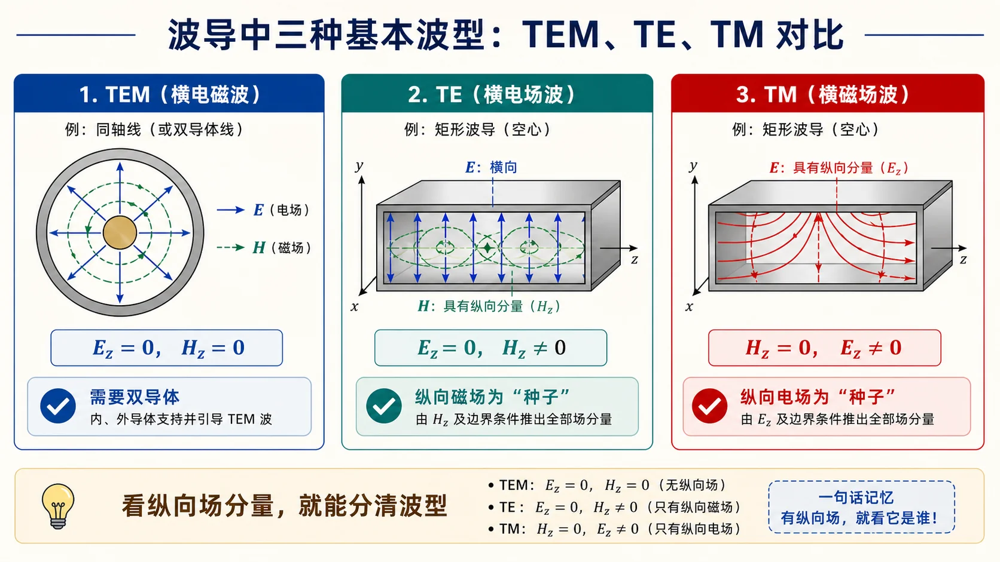

第三次作业 · Lec10–Lec11（波导波动方程与 $\mathrm{TM}_{11}$）§
对应知识点：README
导航： 总目录 · 符号与导读 · Lec10–11 · Lec11～12 · Lec13–Lec16 · 附录
对应大纲：Lec10–Lec11；教材：北理工 §2.1，华科 §2.1–2.2。
作业 1）什么是波型？简述几种主要波型的特点§
波型（mode）：在规则波导等受限结构中，满足 Maxwell 方程与边界条件、能够独立存在且沿轴向具有简单谐变传播因子 $\mathrm e^{-\mathrm j\beta z}$（或 $\mathrm e^{+\mathrm j\beta z}$）的一类场分布；同一几何下可有无穷多离散模，每一模有其截止特性与场结构。

这道题先看纵向分量：有没有 $E_z$、有没有 $H_z$，基本就能把 TEM、TE、TM 分开。再补一句“结构是否允许”，就能解释为什么空心矩形波导没有 TEM。
TEM 模：$E_z=H_z=0$，场完全在横截面内；要求双导体或多导体结构以支持静电势解；空心单导体波导中不存在 TEM（见 Lec11～12 分册）。
TE 模（$H$ 波）：$E_z=0,\ H_z\neq 0$；电场在侧壁满足切向 $E_t=0$ 的边界条件，由纵向磁场通过 Maxwell 方程推出横向电场。
TM 模（$E$ 波）：$H_z=0,\ E_z\neq 0$；在理想导体壁上 $E_z=0$。
要点：$\mathrm{TE}$/$\mathrm{TM}$ 由是否存在纵向场分量划分；同一 $(m,n)$ 指数对可对应不同模族；矩形波导中 $\mathrm{TE}_{mn}$ 与 $\mathrm{TM}_{mn}$ 的截止波数 $k_{\mathrm c}$ 形式相同（$m,n$ 取值约束不同：TM 要求 $m,n\ge 1$）。
作业 2）利用分离变量法给出波动方程的通解（纲要）§
以无源区简谐场、直角坐标下 纵向分量 $\psi$（代表 $E_z$ 或 $H_z$）为例，齐次 Helmholtz 方程
$$ \nabla^2\psi+k^2\psi=0,\qquad k^2=\omega^2\mu\varepsilon. $$

这张图对应本题的答题骨架：先把三维场拆成横截面问题和 $z$ 向传播，再由边界条件把连续的 $k_x,k_y$ 变成离散的模指标。
设 $\psi(x,y,z)=X(x)Y(y)Z(z)$，代入并除以 $\psi$ 得
$$ \frac{X''}{X}+\frac{Y''}{Y}+\frac{Z''}{Z}+k^2=0. $$
令 $X''/X=-k_x^2$、$Y''/Y=-k_y^2$、$Z''/Z=-k_z^2$（分离常数），则
$$ k_x^2+k_y^2+k_z^2=k^2. $$
各方向通解为三角函数或指数函数的线性组合（由边界与传播方向定）：例如
$$ X(x)=A\cos k_x x+B\sin k_x x,\quad Y(y)=C\cos k_y y+D\sin k_y y,\quad Z(z)=F\mathrm e^{-\mathrm j\beta z}+G\mathrm e^{+\mathrm j\beta z}, $$
其中 $\beta$ 与 $k_x,k_y$ 满足色散关系 $k_x^2+k_y^2+\beta^2=k^2$（记法与教材一致即可）。矩形波导中在理想导体壁强加 $E_t=0$ 得 $k_x=m\pi/a$、$k_y=n\pi/b$，从而得到离散模谱与 $k_{\mathrm c}=\sqrt{k_x^2+k_y^2}$。
作业 3）推导矩形波导中 $\mathrm{TM}_{11}$ 模的场量表达式§

本题最稳的路线是“先纵向、后横向”：先用四壁 $E_z=0$ 解出 $\sin(\pi x/a)\sin(\pi y/b)$，再求偏导并代入 Maxwell 旋度关系。不要一开始就分别猜五个非零场分量。
前置知识：什么是矩形波导？§
矩形波导（rectangular waveguide）指横截面为矩形的空心金属管，电磁波主要在管内空气（或介质）中沿管的轴向（教材常记为 $z$ 轴）传播。金属壁一般为良导体近似为理想导体，用来约束电磁场并形成分立的模式（模），在微波频段常用于馈线、馈网或与器件连接。
几何与记号（与本题一致）：设截面在 $xy$ 平面，管长沿 $z$。内侧宽边长记为 $a$，窄边为 $b$，常见取 $a>b$（例如标准波导 BJ-100 / WR-90 的尺寸即为一例）。本题在区域 $0\le x\le a,\ 0\le y\le b$ 内写场，边界即四面金属壁。
和同轴线 / 双线相比（直观区别）：同轴线、平行双导线等双导体结构可以支撑 TEM 模（场完全在横截面内）；而空心单导体矩形管不能传 TEM，只能传 $\mathrm{TE}$、$\mathrm{TM}$ 等波导模——这是「为什么课上要先讲波导模分类」的原因之一。
为什么要单独讲它：形状简单，边界与直角坐标对齐，数学上可用分离变量得到 $\sin(m\pi x/a)$、$\sin(n\pi y/b)$ 等本征函数；工程上尺寸与截止频率一一对应，便于设计「单模工作」频段。
前置知识：截止波数 $k_{\mathrm c}$ 是什么？§
一句话：对某一给定波导模（例如本题 $\mathrm{TM}_{11}$），截止波数 $k_{\mathrm c}$ 是由横截面几何 + 边界条件决定的常数，出现在导行条件与色散关系里；它不是自由空间波数 $k=\omega\sqrt{\mu\varepsilon}$ 的别名。
① 它和传播常数 $\beta$ 的关系（最常用写法）
沿 $z$ 导行时，无耗均匀填充下常写成
$$ k^2=k_{\mathrm c}^2+\beta^2 \qquad\text{等价于}\qquad \beta=\sqrt{k^2-k_{\mathrm c}^2}\,. $$ （当 $k>k_{\mathrm c}$ 时 $\beta$ 为实数，对应可导行。）
这里 $k=\omega\sqrt{\mu\varepsilon}$ 由工作频率决定；$k_{\mathrm c}$ 对该模固定。$k>k_{\mathrm c}$ 时 $\beta$ 为实数，场沿 $z$ 行波传播；$k<k_{\mathrm c}$ 时 $\beta$ 为虚数，场沿 $z$ 衰减（截止区，不能远距离导行）。
② 为什么叫「截止」
当 $k=k_{\mathrm c}$（即 $\beta=0$）时，对应截止角频率 $\omega_{\mathrm c}$、截止频率 $f_{\mathrm c}$、截止波长 $\lambda_{\mathrm c}$（空气填充时常用 $\lambda_{\mathrm c}=2\pi/k_{\mathrm c}$、$f_{\mathrm c}=c\,k_{\mathrm c}/(2\pi)$）。高于 $f_{\mathrm c}$（或短于 $\lambda_{\mathrm c}$）时该模才能导行；低于 $f_{\mathrm c}$ 则该模被截止。
③ 它从哪里来（和本题 Helmholtz 方程的联系）
横截面上纵向分量满足 $(\nabla_t^2+k_{\mathrm c}^2)\psi=0$ 的本征值问题；边界条件使 $k_{\mathrm c}$ 只能取离散谱。矩形波导中由 $\displaystyle k_x=\frac{m\pi}{a},\ k_y=\frac{n\pi}{b}$ 得
$$ k_{\mathrm c}=\sqrt{k_x^2+k_y^2}, $$
每一组 $(m,n)$ 对应一个模、一个 $k_{\mathrm c}$。本题 $\mathrm{TM}_{11}$ 即 $m=n=1$ 的那一组。
④ 小结
记 $k_{\mathrm c}$ 时心里可对照三句话：色散里和 $\beta$ 配对、截止处与 $f_{\mathrm c},\lambda_{\mathrm c}$ 对应、由横截面本征问题算出。
前置知识：为什么还要先写 $E_z$ 的 Helmholtz 方程？§
本题的目标是先求出 $E_z(x,y,z)$，再用 Maxwell 方程推出 $E_x,E_y,H_x,H_y$。下面说明第（1）步里那句「$E_z$ 在横截面上满足二维 Helmholtz 方程」的来龙去脉——它整道题的出发点。
① 无源、均匀介质中的矢量 Helmholtz 方程
时谐场（$\partial/\partial t\to \mathrm j\omega$）、无源区（$\rho=0,\ \boldsymbol J=0$）下，由 Maxwell 方程组可推出电场（同样地，磁场也满足）：
$$ \nabla^2\boldsymbol E+k^2\boldsymbol E=\boldsymbol 0, \qquad k^2=\omega^2\mu\varepsilon. $$
这是矢量方程：在直角坐标系里，每个直角分量 $E_x,E_y,E_z$ 都各自满足同一个标量 Helmholtz 方程 $\nabla^2\psi+k^2\psi=0$（$\psi$ 代表任一分量）。
② 沿 $z$ 导行的行波假设
规则波导沿 $z$ 方向均匀，可设所有场量分离出传播因子 $\mathrm e^{-\mathrm j\beta z}$，即对任意标量场有
$$ \frac{\partial^2}{\partial z^2}\to -\beta^2. $$
于是对 $E_z$（仅是 $x,y,z$ 的函数）有全 Laplacian：
$$ \nabla^2 E_z =\nabla_t^2 E_z+\frac{\partial^2 E_z}{\partial z^2} =\nabla_t^2 E_z-\beta^2 E_z, $$
其中 $\displaystyle \nabla_t^2=\frac{\partial^2}{\partial x^2}+\frac{\partial^2}{\partial y^2}$ 为横向 Laplacian。
③ 从标量 Helmholtz 到「横向二维」方程
将上式代入 $\nabla^2 E_z+k^2 E_z=0$，得到
$$ \nabla_t^2 E_z+(k^2-\beta^2)E_z=0. $$
记 $k_{\mathrm c}^2=k^2-\beta^2$，即
$$ (\nabla_t^2+k_{\mathrm c}^2)E_z=0. $$
这就是第（1）节中要写的第一条式子：它只在横截面 $(x,y)$ 上求解，$z$ 的传播常数 $\beta$ 已吸收进 $k_{\mathrm c}$ 的定义里。物理上，$k_{\mathrm c}$ 是本征值问题定出的截止波数；给定截面与模式 $(m,n)$ 后 $k_{\mathrm c}$ 固定，再由 $k^2=k_{\mathrm c}^2+\beta^2$ 得到色散关系 $\beta=\sqrt{k^2-k_{\mathrm c}^2}$。
④ 与 TM 分类的关系（本题为何先盯 $E_z$）
- TM 模约定 $H_z\equiv 0,\ E_z\neq 0$：纵向电场不恒为零，且在理想导体壁上切向电场为零 $\Rightarrow$ 壁上 $E_z=0$ 成为对 $E_z$ 的直接 Dirichlet 条件，最容易先解出 $E_z$ 的本征函数。
- 求出 $E_z$ 后，无 $H_z$ 时横向场 $\boldsymbol E_t,\boldsymbol H_t$ 由 Maxwell 的旋度方程用 $\partial E_z/\partial x,\ \partial E_z/\partial y$ 表出（正文第（4）步），所以Helmholtz + 边界条件是整道题的「上半局」，旋度关系是「下半局」。
⑤ 若你愿意对照更「教科书」的写法
有的教材先从 $\nabla\times\boldsymbol E=-\mathrm j\omega\mu\boldsymbol H$、$\nabla\times\boldsymbol H=\mathrm j\omega\varepsilon\boldsymbol E$ 对 $\mathrm{TM}$ 模消去 $\boldsymbol H$ 或直接对 $E_z$ 推波动方程，也会得到等价的 $(\nabla_t^2+k_{\mathrm c}^2)E_z=0$。本题作业只需掌握「标量 Helmholtz + 矩形边界 $\Rightarrow$ $\sin$ 本征函数」这一条线即可作答。
延伸：建议搭配学习的前置 / 相邻知识点§
| 主题 | 与本题的关系 |
|---|---|
| 矩形波导的几何（$a\times b$ 截面、沿 $z$ 传播、空心导体管） | 定下求解域与壁上边界条件；与「双导体传输线」概念对比。 |
| 截止波数 $k_{\mathrm c}$、$\beta$、$f_{\mathrm c}$/$\lambda_{\mathrm c}$ | $k^2=k_{\mathrm c}^2+\beta^2$；$k_{\mathrm c}$ 由截面与 $(m,n)$ 决定；截止即 $\beta=0$。 |
| 时谐 Maxwell、复数记号 $\mathrm j\omega$ | 把场方程化为频域，才有 $k=\omega\sqrt{\mu\varepsilon}$。 |
| 理想导体边界条件（$\boldsymbol n\times\boldsymbol E=0\Rightarrow$ 切向 $E=0$，法向 $H=0$ 等） | TM：壁上 $E_z=0$；TE 则常先解 $H_z$。 |
| $\mathrm{TE}$/$\mathrm{TM}$ 分类与「先求哪个纵向分量」 | 本题 TM 先 $E_z$；TE 则常先求 $H_z$。 |
| 分离变量法、Sturm–Liouville 本征值 | 矩形域 $\Rightarrow$ $k_x=m\pi/a,\ k_y=n\pi/b$。 |
| 色散 $k^2=k_{\mathrm c}^2+\beta^2$、截止 $k=k_{\mathrm c}$ | 理解 $k_{\mathrm c}$ 不是额外假设，而是由本征问题给出的常数。 |
| 由 $\nabla\times\boldsymbol E$、$\nabla\times\boldsymbol H$ 写横向场（或横向–纵向场公式） | 求得 $E_z$ 后算 $E_x,E_y,H_x,H_y$。 |
| （进阶）矢量 Helmholtz 与直角分量为何可分离 | 直角坐标下 $\nabla^2\boldsymbol E$ 的各分量形式在均匀介质中互不耦合，故可用标量方程逐个处理。 |
| $k,k_0,k_x,k_y,k_{\mathrm c},\beta$ 与 $\lambda_0,\lambda_{\mathrm c},\lambda_{\mathrm g}$ | 见下文 「与波数相关的概念一览」 速查表。 |
教材上可重点阅读：规则波导中纵向场满足的波动方程推导、矩形波导 TM 模边界条件、横纵向场互推三节，再动笔做本题会顺很多。
延伸：与「波数」相关的概念一览（供系统学习）§
下面把微波基础里常和「波数」一起出现的记号收拢成表，便于对照教材与作业。记号以空气/均匀介质、时谐、无耗为主；有耗或各向异性介质时，教材可能引入复波数或张量，此处不展开。
（A）最基本：介质中的波数 $k$ 与波长
| 记号 / 名称 | 含义（常见说法） | 常用关系 |
|---|---|---|
| $k$ | （介质）波数，无界均匀介质中平面波的相位常数大小 | $k=\omega\sqrt{\mu\varepsilon}=k_0\sqrt{\mu_{\mathrm r}\varepsilon_{\mathrm r}}$ |
| $k_0$ | 真空波数 | $k_0=\omega/c=\omega\sqrt{\mu_0\varepsilon_0}$ |
| $\lambda_0$、工作波长 | 无界介质中由 $f$ 决定的波长（空气常写 $\lambda_0=c/f$） | $\lambda_0=2\pi/k$（对应该介质中的 $k$） |
（B）波导：横向分离常数 $k_x,k_y$ 与截止波数 $k_{\mathrm c}$
| 记号 / 名称 | 含义 | 矩形波导中（与本题相关） |
|---|---|---|
| $k_x,k_y$ | 分离变量得到的横向波数（本征值） | $k_x=m\pi/a,\ k_y=n\pi/b$ |
| $k_{\mathrm c}$ | 截止波数；该模在横截面上的本征值 | $k_{\mathrm c}=\sqrt{k_x^2+k_y^2}$；每一 $(m,n)$ 一组 |
| $\beta$ | 沿 $z$ 的相位常数（导行波的传播常数的虚部；无耗时常为实数） | 色散：$k^2=k_{\mathrm c}^2+\beta^2$（无耗均匀填充） |
（C）与「波长」有关的几种 $\lambda$（勿混）
| 记号 | 名称 | 与波数关系（常见） |
|---|---|---|
| $\lambda_0$ | 工作波长（自由空间或介质中「等效」波长，依教材定义） | $\lambda_0=2\pi/k$ |
| $\lambda_{\mathrm c}$ | 截止波长（该模刚好截止时） | $\lambda_{\mathrm c}=2\pi/k_{\mathrm c}$（常这样对应） |
| $\lambda_{\mathrm g}$ | 波导波长（沿 $z$ 相位差 $2\pi$ 的距离） | $\lambda_{\mathrm g}=2\pi/\beta$，且一般 $\lambda_{\mathrm g}\neq\lambda_0$ |
（D）其它易混名称（说法）
| 说法 | 通常指什么 |
|---|---|
| 传播常数 | 沿传播方向（此处为 $z$）的常数；无耗导行时常记 $\gamma=\mathrm j\beta$，只含 $\beta$；有耗时 $\gamma=\alpha+\mathrm j\beta$（衰减常数 $\alpha$ + 相位常数 $\beta$）。 |
| 相位常数 | 场沿 $z$ 相位变化快慢，即上面的 $\beta$（与「波数」同量纲 $\mathrm{rad/m}$）。 |
| 空间角频率 | 有时把 $k$ 口语说成场的「空间角频率」，与时间上 $\omega$ 对应。 |
（E）本题一条链（把符号串起来）
矩形 $\mathrm{TM}_{mn}$：先由边界得 $k_x,k_y$ $\Rightarrow$ $k_{\mathrm c}=\sqrt{k_x^2+k_y^2}$；再由工作频率定 $k=\omega\sqrt{\mu\varepsilon}$ $\Rightarrow$ $\beta=\sqrt{k^2-k_{\mathrm c}^2}$（$k>k_{\mathrm c}$）；若需要沿 $z$ 波长，用 $\lambda_{\mathrm g}=2\pi/\beta$。
更全的符号约定见 第三次作业解答-00-符号与导读.md。
（1）TM 模与纵向分量的方程（结论式）§
TM 模：$H_z\equiv 0$，$E_z\neq 0$。承接上文「$\nabla^2 E_z+k^2 E_z=0$ + $\partial_z\to -\mathrm j\beta$」，横截面上 $E_z(x,y)$ 满足的方程可缩写为
$$ \nabla_t^2 E_z+(k^2-\beta^2)E_z=0, $$
记 截止波数 $k_{\mathrm c}^2=k^2-\beta^2$（$k^2=\omega^2\mu\varepsilon$），即
$$ (\nabla_t^2+k_{\mathrm c}^2)E_z=0. $$
（2）分离变量与本征函数（矩形域）§
在 $0\le x\le a,\ 0\le y\le b$ 内设
$$ E_z(x,y)=X(x)Y(y),\qquad \text{全解再乘传播因子}\quad \mathrm e^{-\mathrm j\beta z}. $$
代入 $(\partial_x^2+\partial_y^2)E_z+k_{\mathrm c}^2 E_z=0$ 并分离变量，得
$$ \frac{X''}{X}+\frac{Y''}{Y}+k_{\mathrm c}^2=0 \quad\Rightarrow\quad X''+k_x^2 X=0,\quad Y''+k_y^2 Y=0,\quad k_x^2+k_y^2=k_{\mathrm c}^2. $$
边界条件（理想导体壁）：切向电场在壁上为零；$\mathrm{TM}$ 模在壁上 $E_z=0$，故
$$ E_z\big|_{x=0,a}=0,\qquad E_z\big|_{y=0,b}=0. $$
从而 $X,\ Y$ 取正弦本征函数，本征值为
$$ k_x=\frac{m\pi}{a},\quad k_y=\frac{n\pi}{b},\quad m,n=1,2,\ldots $$
（$\mathrm{TM}$ 模要求 $m,n\ge 1$，不能为 $0$，否则 $E_z\equiv 0$。）
$\mathrm{TM}_{11}$ 模取 $m=n=1$，记待定常数 $E_0$，则
$$ E_z(x,y,z)=E_0\sin\frac{\pi x}{a}\sin\frac{\pi y}{b}\,\mathrm e^{-\mathrm j\beta z}. $$
此时
$$ k_{\mathrm c}^2=k_x^2+k_y^2 =\left(\frac{\pi}{a}\right)^2+\left(\frac{\pi}{b}\right)^2, \qquad \beta=\sqrt{k^2-k_{\mathrm c}^2} $$
（导行时要求 $k>k_{\mathrm c}$，即 $\beta$ 为实数。）
（3）由 $E_z$ 求各偏导§
记 $\displaystyle \phi(x,y)=\sin\frac{\pi x}{a}\sin\frac{\pi y}{b}$，则 $E_z=E_0\,\phi\,\mathrm e^{-\mathrm j\beta z}$。对 $x,y$ 求偏导：
$$ \frac{\partial E_z}{\partial x} = E_0\,\frac{\pi}{a}\cos\frac{\pi x}{a}\sin\frac{\pi y}{b}\,\mathrm e^{-\mathrm j\beta z}, $$
$$ \frac{\partial E_z}{\partial y} = E_0\,\frac{\pi}{b}\sin\frac{\pi x}{a}\cos\frac{\pi y}{b}\,\mathrm e^{-\mathrm j\beta z}. $$
（4）横向场与纵向场的关系（常用形式）§
由 Maxwell 方程，$\mathrm{TM}$ 模（$H_z=0$）下可将横向场用 $E_z$ 表为（与本文 $\mathrm e^{-\mathrm j\beta z}$ 约定一致时教材常见写法）：
$$ E_x=\frac{-\mathrm j\beta}{k_{\mathrm c}^2}\frac{\partial E_z}{\partial x},\quad E_y=\frac{-\mathrm j\beta}{k_{\mathrm c}^2}\frac{\partial E_z}{\partial y}, $$
$$ H_x=\frac{\mathrm j\omega\varepsilon}{k_{\mathrm c}^2}\frac{\partial E_z}{\partial y},\quad H_y=\frac{-\mathrm j\omega\varepsilon}{k_{\mathrm c}^2}\frac{\partial E_z}{\partial x}. $$
将（3）中偏导代入，得到 $\mathrm{TM}_{11}$ 模各分量显式（以下各式的公共因子均为 $\mathrm e^{-\mathrm j\beta z}$）：
$$ E_x=-\frac{\mathrm j\beta}{k_{\mathrm c}^2}\,E_0\,\frac{\pi}{a}\cos\frac{\pi x}{a}\sin\frac{\pi y}{b}\,\mathrm e^{-\mathrm j\beta z}, $$
$$ E_y=-\frac{\mathrm j\beta}{k_{\mathrm c}^2}\,E_0\,\frac{\pi}{b}\sin\frac{\pi x}{a}\cos\frac{\pi y}{b}\,\mathrm e^{-\mathrm j\beta z}, $$
$$ H_x=\frac{\mathrm j\omega\varepsilon}{k_{\mathrm c}^2}\,E_0\,\frac{\pi}{b}\sin\frac{\pi x}{a}\cos\frac{\pi y}{b}\,\mathrm e^{-\mathrm j\beta z}, $$
$$ H_y=-\frac{\mathrm j\omega\varepsilon}{k_{\mathrm c}^2}\,E_0\,\frac{\pi}{a}\cos\frac{\pi x}{a}\sin\frac{\pi y}{b}\,\mathrm e^{-\mathrm j\beta z}. $$
其中 $\displaystyle k_{\mathrm c}^2=\left(\frac{\pi}{a}\right)^2+\left(\frac{\pi}{b}\right)^2$。纵向场已在前文给出：$E_z=E_0\sin\frac{\pi x}{a}\sin\frac{\pi y}{b}\,\mathrm e^{-\mathrm j\beta z}$；$H_z=0$。
（5）小结与系数说明§
推导顺序：$\mathrm{TM}$ 定义 $\to$ $E_z$ 的 Helmholtz 方程与 $k_{\mathrm c}$ 定义 $\to$ 分离变量 $+$ 四壁 $E_z=0$ $\to$ $\mathrm{TM}_{11}$ 的 $E_z$ $\to$ 求 $\partial E_z/\partial x,\partial E_z/\partial y$ $\to$ 代入横向–纵向关系得 $E_x,E_y,H_x,H_y$。
系数 $E_0$ 由激励强度或功率归一化确定；作业只要「表达式」时常保留为常数即可。若采用不同的时间因子或传播因子，横向场公式里的 $\pm\mathrm j$ 会随整套相位约定同步变化；作答时保持同一套约定自洽即可。